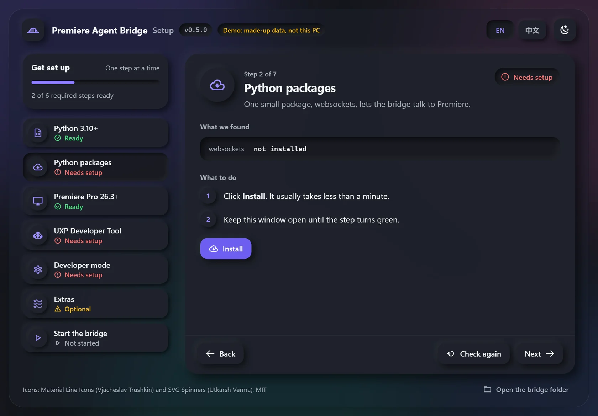

Cuts by what people say
It reads what was said. It keeps the good takes and cuts the mistakes.
1 / 6Free · Open source · For Windows
You tell an AI helper what you want. It does the editing in Premiere Pro for you. You stay in charge.
Works with Claude Code and Codex.

The AI does the boring parts. You make the choices. Scroll inside the phone to see them one by one.
It reads what was said. It keeps the good takes and cuts the mistakes.
1 / 6It puts your clips and graphics in the right spot on the timeline.
2 / 6It listens for cut-off words, clicks and cuts that are too tight.
3 / 6It can swap a clip without losing your effects, volume or size.
4 / 6It can show you what it will do first. Every change can be undone with Ctrl+Z.
5 / 6Your video files stay on your PC. The AI only sees what it needs, like the words and a few still frames.
6 / 6Tell the AI what you want, like “cut the bad takes”.
It reads what people said and decides where to cut.
The bridge passes each step to Premiere Pro. You can watch it happen.
Get the zip file from the download page and unzip it anywhere.
Double-click setup_bridge.bat. A window checks your computer and helps you fix anything that is missing.
Double-click start_bridge.bat, then open Premiere Pro. Now ask your AI helper to edit.
Yes. It is open source under the MIT license. You can use it, change it and share it.
No. It is an independent project. It uses Adobe’s official way of adding plugins to Premiere Pro.
It checks before it changes anything, and every change can be undone with Ctrl+Z. Still, try it on a copy of your project first.
Not yet. Right now it only works on Windows.
Claude Code and Codex. Any AI helper that can run commands on your PC can use it too.